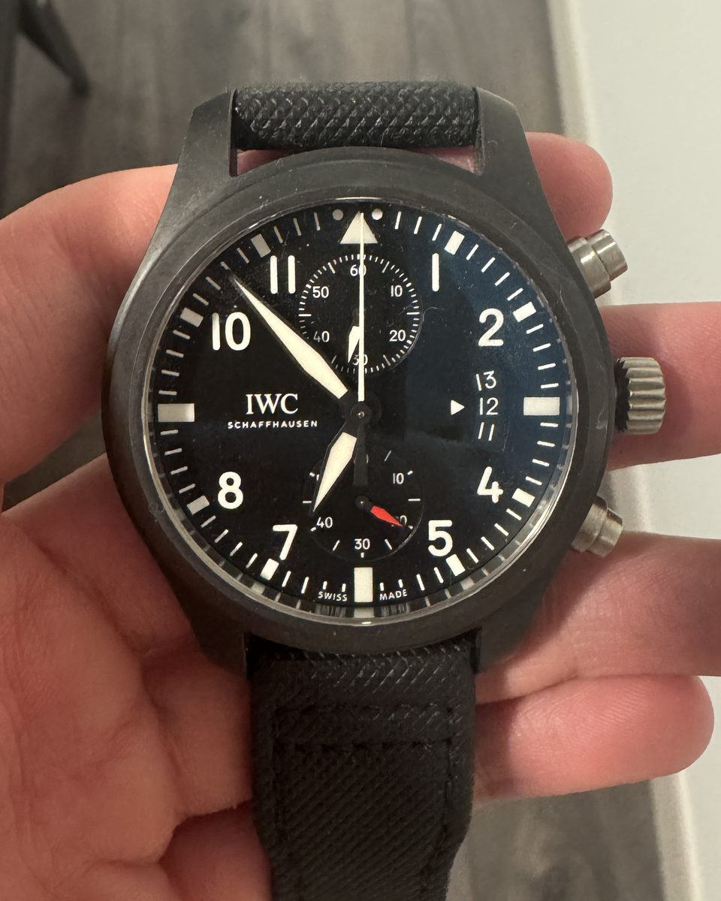

Evan’s take
Loading…
I’ve noticed that most people don’t know much about watches. But once you understand a little, a watch becomes a great topic for networking. I built this site to teach you the basics.

I’m from Shanghai, and I’ve lived in the US for five years. Watches were part of home long before they were my hobby: my parents run a business and travel often, their trips usually came back with a new watch, and our home slowly filled with them. My dad liked to pick one up and tell me what made it special.
Just before I left for the US, he gave me my first watch: an IWC Pilot’s Watch Chronograph from the TOP GUN line, made in partnership with the US Navy’s fighter-pilot school. It’s black ceramic and 46 mm across, so it’s not a quiet watch.
He had always explained watches to me, but having one on my own wrist made the lessons stick. Almost every detail turned out to be a difference between one kind of watch and another.
America taught me something else. On campus, hardly anyone wears a watch, since everyone just checks their phone. In the workplace, I found almost everyone wears one. That gap is a big part of why I made this site.
What my dad taught me, in the order that helps most: how a watch keeps time, what the numbers mean, what to wear when, and which brands are best at what.
The movement is the engine inside. Every watch on this site uses one of these four.
The facts in each watch’s details, plus the terms you’ll meet on a maker’s spec sheet.
The dress code decides the watch as much as the suit.
Every brand has a speciality. Choose a name to see its watches.
Many great names come from French-speaking Switzerland and France. Press Say it to hear one in its own language.
Choose a watch to see its size, its movement, what to wear it to and where to try it on.
Places where watches have a story. Each one links to a watch above.
Evan’s take: a short intro to your trip. When you went, where, and what you were looking for.
Type a price you saw abroad to see it in six other currencies at today’s rates.
Evan’s take: buying tips from your trip, such as tax-free shopping and where prices felt different. We’ll fact-check any rules before publishing.
Loading photo…
Evan’s take
Loading…